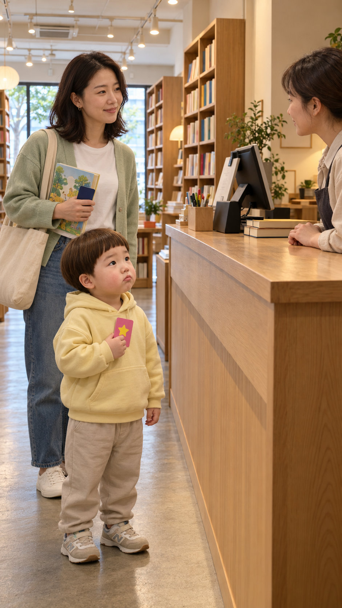
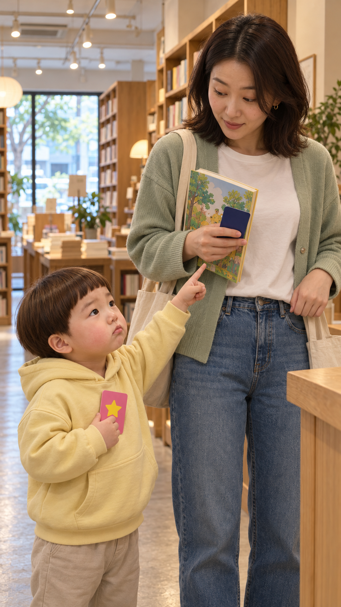

도윤이는 24개월 · 서점 카드 편
카드 소품 가시성 시험
시험 그림 · 대표 판정 전 · 영상 아님채택된 원고 v3의 웃음이 작은 카드 두 장으로 보이는지 확인하는 화면입니다. 서점 빈 세트는 승인됐지만, 이 **인물·소품 시험 그림은 아직 승인 전**입니다.
① 첫 컷 시작 자세


직원은 계산대 뒤, 도윤이는 앞쪽에서 분홍 장난감 카드를 듭니다. 엄마의 오른손에 그림책과 남색 카드가 함께 있습니다.
SHA-256 9b40736876f42bdcbacea644d30f2ad95b581fd78f8d4e1a7742153a900926c8
② 마지막 컷 끝 자세 시험


엄마 **오른손**에 책과 남색 카드가 유지되고, 도윤이 오른손에는 분홍 장난감 카드가 있습니다. 도윤의 왼손은 카드가 든 엄마 손 쪽을 가리킵니다.
SHA-256 6475857eb1d7582d851f1263ed1f13a350429593a2d29ef2fe2c94f643d30246
판정할 사항
- 휴대폰에서 분홍 장난감 카드와 남색 실제 카드가 구분되는지
- 엄마의 **같은 오른손**에 카드와 책이 계속 있다는 인과가 보이는지
- 도윤이의 얼굴·의상과 서점 공간이 두 장 사이 이어지는지
한계: ②는 마지막 컷의 끝 자세 시험이지 H3에 넣을 시작 키프레임이나 실제 움직임 영상이 아닙니다. 가리키는 동작·직원 대사·완성 영상은 아직 검증되지 않았습니다. 앞서 생성한 끝 자세 1차 시안은 카드가 엄마 왼손으로 바뀌어 폐기하고 ②로 다시 시험했습니다.
이 정확한 그림의 승인 전에는 `detail_test.tsv`를 승인으로 기록하거나 유료 H3 영상 발주를 하지 않습니다. 링크는 로그인 없는 읽기 전용입니다.
원고 SHA-256 4c44cddfed3f2d380b7df176c666212d6c6ade88d9982a5200abd369eaf81164